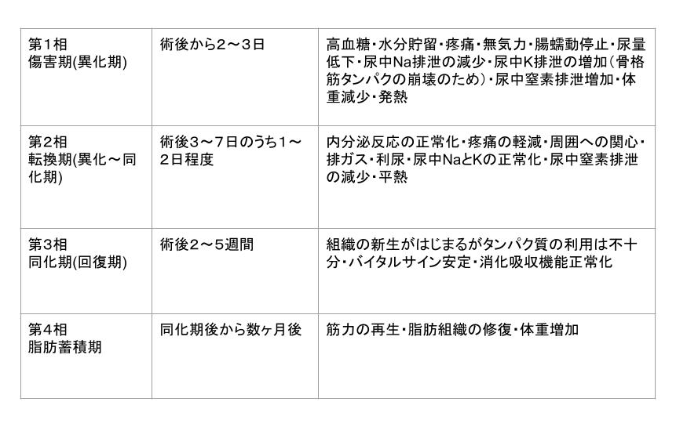

第５章 まとめ 〜Moore分類〜
目標
- Moor分類の各時期とその特徴を述べることができる
Summary
- 手術後の代謝がどのように変化するのかを整理したものをMooreの分類という
本題に入る前に
いよいよ最終章です、ここまでの学習はいかがでしたでしょうか。
「ホメオスタシスとは？」「侵襲とは？」という基本的なことから始まり、「炎症反応とは？「循環への影響」「神経・内分泌反応による代謝への影響」と学んできましたね。
覚えることが多くて苦労した人もいるのでしょうか？
ここでこれまで学んだことを一度整理してみましょう。
-
第1章
- ホメオスタシスとは何かを述べることができる
- 侵襲とは何かを述べることができる
- 炎症反応により発熱が生じるメカニズムを述べることができる
- サードスペース・リフィリングという現象を述べることができる
- 侵襲により血糖が上がるメカニズムを述べることができる
第２章
第３章
第４章
と学んできました。
「うげ〜まだあるのか・・・」と思われる方もいるかもしれません。
安心してください。
第5章はこれまでの内容、つまり侵襲によってどのような変化が生じるのかを時系列で整理します。

つまり、これまでの内容が理解できていれば、恐れる必要はありません。
では最後にもうひと頑張りしていきましょう！
Moore分類
Moore氏は手術後の起こる患者さんの身体の反応（生体反応）のうち、代謝の変動を以下の4相にまとめました（それをMoore分類と言います）。
これまで「侵襲を受けた患者さん」の反応について学んできて、「急に手術の話!?」となる方もいるかもしれません。
ですが、手術も侵襲のひとつなので、手術を侵襲と読み替えていただければ大丈夫です。
第4章でも出てきましたが、「代謝」という言葉が出てきました。
よく「あの人は代謝が良いよね〜」と話したりすることがありますよね。
代謝というのは何かというと、体内の化学反応によって、物質を変化させることを意味しています。
具体的には、食事を食べて腸で吸収し、生きるために必要な物質をつくる同化作用と、つくったものを分解してエネルギーを生み出す異化作用の2つを合わせたものを代謝といいます。
代謝 ＝ 同化 ＋ 異化
ここで思い出してほしいのが、「ATP」です。
解剖生理学や生物学で一度は聞いたことはありますよね。
ATPはエネルギーなんだ、ということを思い出してください。
より具体的にいうと、同化の過程ではATPを使って、吸収した栄養を貯めておく（必要な時にいつでも使えるように！）、異化は貯めておいたものを分解して、ATPをつくる、ということです。
同化と異化が絶えず繰り返すことが、すなわち「生きる」ということです。
侵襲を受けた際は、ホメオスタシスを維持するために、「異化」が優位にはたらきます（通常より優位な状態を「亢進」と言います）。
侵襲の程度によって各相の日数は変わってきます。
また侵襲は手術以外にもありますが、ここでは手術後の一般的な経過を学んでおきましょう。

第１相 傷害期
手術侵襲を受けて、神経・内分泌反応が最も活発な時期です。
前回の第４章でも学習しましたが、代謝が亢進するため、生体は血糖を高くして、対応しようとします。
さらにエネルギーを作り出そうと、筋肉や脂肪もこわそうとするので、体重が減少します。
また炎症反応により、発熱や循環動態への影響が顕著に生じる時期です。
第２相 転換期
侵襲による生体反応が収まり、回復過程に転じる時期です。
具体的にいうと、神経・内分泌反応が正常化することで、生体が普段の環境に戻ろうとする時期です。
サードスペースに移行した水分が血管内に戻るリフィリングが発生するため、尿量が増加します。
第３相 同化期（回復期）
この時期に入ると筋力が少しずつ回復し、患者さんの活動性が上がってきます。
第４相 脂肪蓄積期
筋力が再生し、脂肪が蓄積され、体重が回復します。 活動性や体力が侵襲を受ける前まで回復し、社会復帰が可能となります。
ここまでお疲れさまでした！
では最後の確認テストといきましょう！
確認テストをクリアできたら、いよいよ最終テストです！